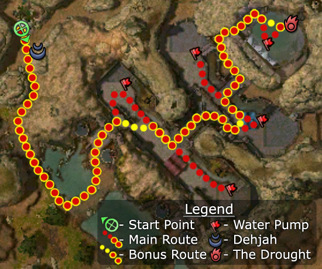

Elite: Sandstorm
M7b
Rilohn Refuge
◉ Mission Map

Click to enlarge · Local cache · Wiki
Summary (click to expand)
You've agreed to help the elemental Dehjah to remove the Drought , a powerful demon, which has taken up residence in Mahnkelon Waterworks . If left unchecked, the Drought will corrupt the river Elon making it unusable for all those living in the area.
Region: Kourna · Mission: 7b of 20 · Type: Cooperative
Required hero: Master of Whispers
Path: Master of Whispers path
✓ Objectives
Destroy the Drought.
- Protect Dehjah until she opens the entrance to the Mahnkelon Waterworks.
- Make your way to the central reservoir.
- Weaken the Drought by shutting off the water pumps. [5...0] of 5 remain active.
- *BONUS* Defeat the Drought without shutting down water pumps.
→ Walkthrough
At the beginning of the mission you follow Dehjah as she leads the way to an entrance of the waterworks. She seems to be in a hurry to get rid of the Drought, as she tends to run ahead as soon as each group of enemies is eliminated. Be very careful as she turns left off the land to head to the fort as you can be detained by the group of Kournans whom she will often not aggro. This almost always results in her being killed by the Steelfang Drakes. She will be overwhelmed if you don't keep up, so stick with her. Do not waste any time looting after each encounter as she will not wait. If she dies the mission is over.
Dehjah is the only one who can open the gates to the waterworks. If you miss this by chance, by straying off fighting, you'll be frustrated when you get back to the main gate and it remains locked (even if Dehjah is still alive). If you miss her opening the door just resign and start over because you cannot get in.
Dehjah leaves you at the entrance to the waterworks. There is an environmental effect in this area, Thirst of the Drought, which increases the damage you take from earth damage by 50%. This can make fighting Droughtlings more annoying, but really becomes a problem against the Drought itself who is an elementalist boss specializing in Earth Magic. You can get rid of this effect by turning off each of the pumps in the waterworks, of which there are 5 in total. Each pump gives a 2% morale boost and reduces the environmental effect by 10% until there is no effect at all; however, turning off a pump will cause your party to not gain the Master's Reward.
Travel to each pump indicated by the flags on the area map, killing anything which gets in your way. Switch off as many pumps as you feel is necessary as you make your way inwards to the Drought.
The Drought is accompanied by two Droughtlings and there are several more groups of Droughtlings in the area. Take care of any Droughtling groups you think will get in the way first. Then utilize the skills recommended below when you take on the Drought and stay spread out watching for Sandstorm. Kill the Drought and the Droughtlings in its group to finish the mission.
★ Bonus
This is one of the few missions where you must do less, rather than more, to achieve the bonus. Take the most direct route, forgetting the water pumps, and head straight to the Drought. Make sure that you can handle its increased damage output; preprotting, interrupting and/or dazing are all recommended.
◆ Hard Mode
No dedicated Hard Mode section on the wiki — expect tougher foes and adjusted mechanics. See walkthrough notes.
☠ Bosses & Elites
✦ Tips & Notes
Skill recommendations
- Bring anti-caster skills for the Drought and Droughtlings. Examples would be skills which cause daze, spell interrupts, shutdown (such as Panic or Power Block) or hexes which cause damage to spellcasters (such as Backfire).
- Pain Inverter is especially useful if you bring lots of minions - the Drought will kill itself very quickly.
- The Thirst of the Drought environmental effect increases earth damage taken by your party by up to 50%:
- Avoid bringing Stone Striker.
- Winter can be used to change the Drought's earth damage to cold damage, negating the Thirst of the Drought effect.
- Bring skills that protect against earth or elemental damage.
- Damage reduction can be helpful, e.g. Protective Spirit or Shelter.
- The Mesmer skill Aneurysm can be used as a spike against the Droughtlings.
- Restoration helps to prevent wipes, especially during the boss battle.
- Enchantment-based builds are vulnerable to enchantment removal by Kournan Oppressors and Seers.
- Hex removal skills could be unnecessary; the only hex spells your party will encounter are Enchanter's Conundrum (the hex that is applied has no impact if your party does not use enchantments) and Life Siphon (ends when its caster dies).
Notes
- Since you gain the standard reward if you switch off any more than one pump, the only practical benefit for skipping pumps after turning off two is that it will make the mission slightly faster.
- To capture Sandstorm from the Drought, ensure it is killed before the two Droughtlings adjacent to it.
- If you are having trouble keeping Dehjah alive to open the gate, do not approach her as you start the mission. Stay tight into the shadow of the cliffs, and clear the route to the gate. Then have a party member run back to trigger Dehjah.
- Survivors beware, for even in Normal mode, the Drought could kill a player in a single hit when going for the Master's reward.
- After completing this mission, your party will be teleported to Moddok Crevice.
- Completion of this mission will fill in page #4 in the Night Falls storybook.
- This mission is not required to complete the campaign.